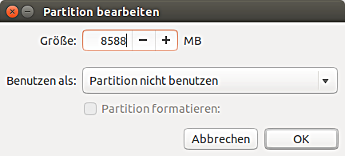

Ubuntu Installation
Dieser Artikel wurde für die folgenden Ubuntu-Versionen getestet:
Ubuntu 16.04 Xenial Xerus
Ubuntu 14.04 Trusty Tahr
Dieser Artikel beschreibt die Installation von Ubuntu von der Desktop-CD – womit allerdings auch eine DVD oder ein entsprechend eingerichtetes USB-Laufwerk gemeint sein kann. Die Installation erfolgt über den Installationsassistenten Ubiquity auf ein im Rechner eingebautes Laufwerk – der Assistent unterstützt auch die parallele Installation zu einem bereits vorhandenem Betriebssystem wie z.B. Windows, einschließlich der dann meist notwendigen Verkleinerung bereits bestehender Partitionen.
Ein paar Dinge gilt es aber zu beachten, die im Folgenden erläutert werden. Sollte auf einem bestimmten Rechner die Desktop-CD einmal nicht auf Anhieb richtig booten wollen, hilft der Artikel Ubuntu-CD Problembehebung übersichtlich bei der Suche nach der Ursache. Des Weiteren kann natürlich bei Bedarf auch im entsprechenden Support-Forum um Hilfe gebeten werden.
Die Installation auf ein externes Laufwerk ist im Artikel Installation auf externen Speichermedien beschrieben.
Voraussetzungen¶
Die Installation von Ubuntu in der Standardvariante benötigt einen Computer mit mindestens 1 GiB Arbeitsspeicher (zu empfehlen sind 2 GiB oder mehr) und eine 3D-Grafikkarte. Für Systeme mit weniger Arbeitsspeicher oder ohne 3D-Grafik sollte auf Lubuntu bzw. dessen Alternate-CD (eine Installationsvariante ohne grafische Oberfläche) zurückgegriffen werden. Bei einer Grafik ohne 3D-Unterstützung wird der Prozessor so stark belastet, dass das System kaum sinnvoll bedienbar läuft.
Nach der Installation der jeweils aktuellen Version von Ubuntu und einer ersten Aktualisierung belegt das System auf der Festplatte ca. 3–4 Gigabyte. Hinweise und Empfehlungen zur geeigneten Festplatteneinteilung findet man im Artikel Partitionierung.
Seit etwa 2012 sind fast alle Rechner mit EFI Bootmanagement ausgestattet, welches für die 64-Bit-Variante von Ubuntu vom jeweiligen Standard-Installationsmedium direkt unterstützt wird. In den meisten dieser Geräte ist auch ein BIOS-Kompatibilitäts-Modus "CSM" möglich. Grundsätzlich ist aber auch, z.B. auf schwachbrüstiger EFI-Hardware, die Installation des leichtgewichtigeren 32-bit Ubuntu möglich. Wenn andere schon installierte Betriebssysteme wie Windows beibehalten werden sollen, gilt es, manches zusätzlich zu beachten.
Alle auf dem Rechner vorhandene Betriebssysteme müssen, um per Boot-Auswahl beim Rechnerstart zum erfolgreichen Booten gebracht werden zu können, im selben Modus installiert sein – d.h., in der Praxis richtet man sich bei der Ubuntu-Installation i.d.R. nach einem evtl. schon vorinstallierten Windows (ab Windows 8 in der Regel (U)EFI, während bei reinen Linux-Rechnern der BIOS-Modus ausreicht).
Vorbereitungen¶
Datensicherung¶
Wenn sich auf dem Computer schon ein Betriebssystem (wie beispielsweise Windows, Mac OS X oder ein anderes Linux-System) oder wichtige Daten befinden, sollte vor einer Installation unbedingt eine System- bzw. eine Daten-Sicherung erstellt werden. Wie bei jeder Veränderung am Computer kann immer auch etwas schiefgehen.
Startmedium (CD, DVD oder USB-Datenträger) herstellen¶
Auf der Downloads-Seite hier im Wiki findet man die Links zu den ISO-Images der verschiedenen Ubuntu-Varianten. Das heruntergeladene Image ist anschließend mit einem geeigneten Programm auf einen CD- bzw. DVD-Rohling zu brennen oder als Live-USB-Medium einzurichten. Bei aktuellen Versionen wird aufgrund der Größe des Images eine DVD statt einer CD benötigt. Für ein USB-Medium ist das Vorhandensein von EFI Bootmanagement beim Rechner zu überprüfen und der USB-Stick ggf. speziell für den Start im EFI-Modus einzurichten. Bei aktiviertem BIOS_Modus kann man auf einen USB-Stick auch eine persistente Installation erstellen.
Start der Desktop-CD¶
Beim Start des Computers muss die Ubuntu-CD oder -DVD im optischen Laufwerk eingelegt bzw. der vorbereitete USB-Stick muss an den Rechner angeschlossen sein. Bei Netbooks ohne CD- bzw. DVD-Laufwerk bleibt nur die Möglichkeit der Installation mit einem USB-Medium – oder einem über USB angeschlossenen externen CD- bzw. DVD-Laufwerk. Wenn der Computer trotzdem wie gewohnt von der Festplatte startet (oder gar nicht startet, wenn auf der Festplatte kein Betriebssystem installiert ist), ist er nicht für den automatischen Start von CD, DVD bzw. einem externen USB-Medium eingerichtet.
Die entsprechende Einstellung erfolgt im Setup – sei es ein herkömmliches BIOS, sei es ein (U)EFI-Setup –, oder es wird das (bei Rechnern der letzten Jahre normalerweise vorhandene) Bootmenü aufgerufen. Die genaue Vorgehensweise dafür ist der dem Computer oder der Hauptplatine (Mainboard) beigelegten Anleitung zu entnehmen (vgl. etwa diese Seite  oder das BIOS-Kompendium ). Die jeweilige Taste sollte man nach dem Einschalten des Computers sofort mehrfach drücken, gerade auch dann, wenn nichts am Bildschirm zu sehen ist.
oder das BIOS-Kompendium ). Die jeweilige Taste sollte man nach dem Einschalten des Computers sofort mehrfach drücken, gerade auch dann, wenn nichts am Bildschirm zu sehen ist.
Als erstes sollte die Desktop-CD im Standardmodus verwendet werden, bis der Willkommensbildschirm erscheint (Abbildung siehe unten). Um besondere Startoptionen festzulegen (z.B. beim PAE-Fehler; siehe auch Bootoptionen), ist dagegen beim ersten Startbildschirm mit dem kleinen Logo unten mittig eine beliebige Taste zu drücken, wodurch man in den Auswahlbildschirm für erweiterte Startoptionen gelangt.
Die Desktop-CDs aller Ubuntu-Varianten können sowohl im herkömmlichen BIOS-Modus (auch Legacy Mode oder CSM) als auch im (U)EFI-Modus gestartet werden. Besonders wenn der Computer beide Modi unterstützt und folglich das Ubuntu-Live-System im Bootmenü zweimal erscheint – einmal mit "EFI" oder "UEFI" im Eintrag und einmal ohne –, hängt von dieser Auswahl beim Booten ab, ob eine eventuelle spätere Installation von diesem Medium im entsprechenden_ Modus gelingen wird. Soll ein USB-Medium verwendet werden, muss es je nach Bedarf zur Verwendung für den herkömmlichen BIOS-Modus, für (U)EFI oder für beides hergestellt und wiederum geeigneten Modus gestartet werden.
Internetverbindung¶
Bei der Installation muss der Rechner nicht unbedingt eine Internetverbindung haben. Mit einer solchen können aber – wenn man dies während der Installation auswählt – die zusätzlichen (deutschen) Sprachpakete, verfügbare Aktualisierungen und weitere Multimedia-Dateien automatisch installiert werden.
Um die Internetverbindung während der Installation zu aktivieren, wählt man im bereitstehenden NetworkManager rechts oben im Systembereich eine Verbindung aus, wobei (entsprechende Hardware vorausgesetzt) auch UMTS möglich ist. Um sich mit einem WLAN zu verbinden, klickt man das Symbol für den Netzwerkmanager an, wählt das WLAN aus und gibt bei der darauf erscheinenden Abfrage das Passwort ein. Eine Verbindung über ein Netzwerkkabel wird in der Regel automatisch erkannt und genutzt.
Installation¶
Direkte Installation oder aus dem Live-Modus heraus¶
| Willkommensbildschirm direkt nach dem Systemstart |
| Ubuntu-Desktop der Live-CD – evtl. Nützliches für die Installation |
Im Willkommensbildschirm sollte man zunächst die gewünschte Sprache einstellen. Dann werden diese Möglichkeiten geboten:
"Ubuntu testen": Hierbei startet man nur ein Live-System von CD, ohne am Rechner etwas verändern zu müssen. Man kann dann aber auch aus diesem Live-System heraus Ubuntu installieren. Dieser Start eines im Prinzip vollwertigen Ubuntu-Systems bietet, selbst wenn man von vorn herein nur eine Installation vorhat, möglicherweise den Vorteil, dass man vorbereitend oder begleitend zur Installation auf bestimmte Programme zurückgreifen kann. Das zweite Bild gibt einen Überblick, mit welchen Buttons im Startmenü von Unity evtl. nützliche Werkzeuge erreicht werden können:
Die Dash (vergleichbar mit dem Start-Button auf dem traditionellen Windows-Desktop) – Hier können die im System installierten Programme aufgefunden und gestartet werden.
Ubuntu installieren – Damit wird die nachfolgend beschriebene Installation gestartet.
Der Dateimanager Nautilus (vergleichbar mit dem Explorer in Windows oder der Finder beim Mac) – Damit können Dateien gefunden, geöffnet und verwaltet werden.
Webbrowser Firefox – Bei bestehender Internetverbindung besteht damit bereits der gewöhnliche Zugang ins Web.
Textverarbeitungsprogramm LibreOffice Writer – Dieses sollte allerdings nicht für eine eventuelle Bearbeitung von Systemdateien verwendet werden; dazu ist ein reiner Texteditor zu benutzen.
Das Ubuntu Software-Center – Damit können im laufenden Live-System weitere in den Paketquellen von Ubuntu enthaltene Programme über das Internet nachinstalliert und genutzt werden.
Die Datenträger des Systems – Sie werden weiter unten im Menü einzeln aufgeführt; per Klick werden sie wiederum im Dateimanager angezeigt.
Ferner können folgende Programme nützlich sein, die nur über die Dash (den Startbutton ganz oben links) verfügbar sind, etwa:
Der Texteditor gedit – um ggf. Systemdateien zu bearbeiten
GParted – umfangreiches Werkzeug, um die Partitionen auf Datenträgern (wie Festplatten) zu bearbeiten; unter Umständen komfortabler und mit mehr Möglichkeiten ausgestattet als das im nachfolgend beschriebenen Installer integrierte Partitionierungswerkzeug
Das Programm Bildschirmfoto – um Screenshots (d.h. ein Abbild des aktuellen Bildschirms oder eines Fensters darauf) zu erstellen und in eine Datei zu speichern, z.B. während der Installation (Tipp: Um Screenshots außerhalb des Live-Systems verfügbar zu machen, kann man sie unter Verwendung von Firefox auf einen Cloud-Dienst hochladen.)
"Ubuntu installieren": Damit wird die Installation von Ubuntu direkt gestartet, ohne in ein umfassend ausgestattetes System mit Benutzeroberfläche und Programmen zu gelangen.
Vorbereitung der Installation¶
| nur im Modus Ubuntu testen: Einstiegsbildschirm in die Installation |
| Prüfung: Speicherplatz, Stromversorgung, Netzwerk; Systemaktualisierungen durchführen oder Codecs u.ä mit installieren? |
Wird die Installation aus einem Live-System (s.o.) gestartet, erscheint nochmals ein Willkommensbildschirm, mit dem die Sprache für das nun zu installierende (!) System festgelegt wird. Dieser erscheint nicht, wenn beim ersten Willkommensbildschirm (s.o) "Ubuntu installieren" gewählt worden ist; dann wird die dort vorgenommene Sprachauswahl der folgenden Installation zugrunde gelegt. Anschließend ist der Installationsfortgang bei beiden Varianten identisch.
Im nächsten Installationsdialog findet eine Abfrage von notwendigen oder empfohlenen Voraussetzungen zur Installation statt. Erfüllte Bedingungen werden mit einem grünen Häkchen signalisiert. Bei Notebooks ist eine Stromversorgung über das Netzteil anzuraten. Es wird mindestens 4,4 GiB freier Festplattenplatz benötigt, um später noch Platz zu haben, um weitere Software zu installieren bzw. um beim Umstieg (Upgrade) auf spätere Ubuntu-Version keine Platzprobleme zu bekommen. Manchmal wird hier mehr freier Speicherplatz als tatsächlich benötigt verlangt (bei Lubuntu z.B. 5,3 GiB) – dieser Fehler (insbesondere relevant bei Netbooks mit geringem Festspeicherplatz) kann aber einfach umgangen werden.
Über die beiden Checkboxen im unteren Teil dieses Fensters ist zu wählen, ob direkt nach der Installation noch Aktualisierungen des Systems und Sprachpakete herunterladen werden sollen – eine funktionierende Internetanbindung vorausgesetzt – und ob das Installationsprogramm auch Codecs (z.B. für MP3-Dateien) von Drittanbietern einspielen soll. (Aktuelle Pakete, Codecs sowie jede weitere Software lassen sich natürlich auch nachträglich noch über die Paketverwaltung installieren.)
Hinweis:
Sollte der Rechner mit einer Hybridgrafikkarte ausgestattet sein, empfiehlt es sich bei (selten auftretenden) Grafikproblemen nach der Installation, den Haken bei "Software von Drittanbietern installieren" bei einem zweiten Installationsversuch nicht zu setzen oder den entsprechenden Treiber nachträglich zu entfernen.
Auswahl der Partition bzw. Partitionierung und Bootloader¶
Im nächsten Schritt wird festgelegt, wo die Systempartition von Ubuntu, ggf. weitere Partitionen und der Bootloader installiert werden sollen. Je nachdem, ob man eine unbenutzte (neue) Festplatte hat, oder ob bereits Partitionen – evtl. mit einem installierten weiteren Betriebssystem – angelegt sind, sieht das erscheinende Fenster etwas anders aus:
| Dialog Installationsart bei leerer Festplatte |
| Dialog Installationsart, wenn andere Betriebssysteme bereits vorhanden sind |
Varianten der automatischen oder halbautomatischen Partitionierung¶
Folgende Optionen können angeboten werden, je nach Plattenbelegung:
"Festplatte löschen und Ubuntu installieren": Möchte man auf dem Rechner nur Ubuntu und kein anderes Betriebssystem nutzen, wählt man diesen Punkt. Die ganze Festplatte wird unwiderruflich gelöscht und für die Neuinstallation genutzt. Dabei wird der Bootloader in den Master Boot Record (kurz: MBR) der ersten Festplatte geschrieben. Bei EFI Bootmanagement wird stattdessen automatisch in eine EFI-Partition auf der ersten Festplatte installiert.
"Ubuntu <Versionsbezeichnung> löschen und neu installieren": Eine bereits vorhandene Installation derselben Ubuntu-Version wird vollständig gelöscht und am selben Ort eine Neuinstallation ausgeführt.
"Ubuntu <Versionsbezeichnung_alt> auf die Version <Versionsbezeichnung_neu> aktualisieren": Hatte man bereits die unmittelbar vorhergehende Ubuntu-Version oder die vorherige LTS-Version von Ubuntu installiert, bietet das Installationsprogramm eine Aktualisierung an.
"Ubuntu <Versionsbezeichnung> neben <Anderes_Betriebssystem> installieren": Alternativ kann man beide Versionen parallel installieren. Unter Umständen wird in einem weiteren Dialog ein komfortabler Schieberegler angeboten, um die Platzverteilung zwischen dem bereits bestehenden Betriebssystem und dem neu zu installierenden Ubuntu einstellen zu können. Die Partition des bisherigen Betriebssystems wird entsprechend verkleinert und Ubuntu in eigene Partitionen (Root und Swap, vgl. weiter unten) auf dem frei gewordenen Festplattenbereich installiert. (Vgl. auch http://www.ubuntu.com/download/desktop/install-ubuntu-desktop.)
Fortgeschrittene Optionen: Für all diese Varianten kann auch ausgewählt werden, ob das System voll verschlüsselt werden soll ("Encrypt the new Ubuntu installation for security") oder ob die Partitionen in einem LVM angelegt werden sollen ("Use LVM with the new Ubuntu installation"). Obwohl aus dem Dialogfenster nicht ersichtlich, wird bei der Wahl der Vollverschlüsselung innerhalb des verschlüsselten Bereichs seinerseits mit einem LVM gearbeitet (was dem gängigen und empfehlenswerten Vorgehen entspricht).
Manuelle Partitionierung¶
Möchte man die Partitionierung der Festplatte selbst vornehmen, wählt man aber den Punkt "Etwas Anderes". Das kann v.a. dann angebracht sein, wenn Ubuntu neben einem anderen schon vorhandenen Betriebssystem zu installieren ist (vgl. Dualboot) oder falls der Bootloader nicht in den MBR oder die EFI-Partition der ersten Festplatte installiert werden soll. Für die Partitionierung wird eine direkt im Installationsassistenten integrierte, angepasste GParted-Oberfläche verwendet.
Achtung!
Durch Anwahl und anschließende Bestätigung des Befehls "Neue Partitionstabelle …" in diesem Dialog wird das Löschen der gesamten Festplatte veranlasst, sodass alle vorhandenen Daten verloren gehen werden! Dies wird allerdings erst wirksam, wenn am Ende des Hauptdialogs zur Partitionierung "Jetzt installieren" gewählt und das Schreiben der Änderungen auf die Festplatte bestätigt wird.
Hinweis:
Eine manuelle Partitionierung, wie im Folgenden beschrieben, ist für Einsteiger oft nicht nötig. Allerdings erkennt erst Ubuntu ab Version 14.10 ein Windows 8 mit EFI Bootmanagement (welches bei vorinstalliertem Windows i.d.R. eingerichtet ist) korrekt und bietet nur dann zum Verkleinern der Windows-Partition einen Schieberegler an. Bis einschließlich Ubuntu 14.04 muss man daher manuell partitionieren, um ein Windows mit EFI (ab Windows 7 möglich) neben Ubuntu erhalten zu können.
| Partitionierungs-Tool bei leerer Festplatte, ohne Partitionen |
| Partitionierungs-Tool mit angelegten Partitionen (Dropdown Bootloader geöffnet) |
Neue Partitionstabelle anlegen VERANLASST DAS LÖSCHEN DER GANZEN FESTPLATTE VERANLASST DAS LÖSCHEN DER GANZEN FESTPLATTE |
Die Datenträger sind meist als sda, sdb usw. benannt, und die darauf angelegten Partitionen mit der Datenträgerbezeichnung und einer nachgestellten Zahl, also sda1, sda2 usw.
Bei neuen oder unbenutzten Festplatten legt man mit "Neue Partitionstabelle …" eine ebensolche an, um anschließend Partitionen einrichten zu können. Bei schon mit Partitionen belegten Platten kann dieser Befehl genutzt werden, um sie komplett zu löschen, ihren gesamten Speicher wieder freizugeben und neue Partitionen einzurichten. Sämtliche Änderungen können mit "Zurücksetzen" jederzeit wieder verworfen werden – solange mit "Jetzt installieren" und anschließender Bestätigung die vorgenommenen Einstellungen nicht endgültig angewandt werden.
Zum Bearbeiten der Partitionen wählt man durch Anklicken die betreffende Partition oder einen geeigneten freien Bereich angewählt (wichtig!), und es können folgende Operationen ausgeführt werden:
| Partition im Format ext4 anlegen (wichtig: richtiger Einbindungspunkt!) |
| Partition im Format swap anlegen (kein Einbindungspunkt nötig!) |
|  |
| Partition bearbeiten – ggf. auch Verkleinern |
"Partition hinzufügen": Mit "+" (bzw. "Hinzufügen …" bei älteren Ubuntu-Versionen) wird einen Unterdialog aufgerufen (s.o.), um mit einem abschließenden "Ok" die nötigen Einstellungen vorzunehmen. Dieser Schritt ist so oft zu wiederholen, bis alle benötigten Partitionen angelegt sind. Einstellbar sind:
die Größe in MiB (1 TiB = 1.000 GiB = 1.000.000 MiB)
das anzulegende Dateisystem (in der Regel ext4)
der Einhängepunkt ("mount point" – vgl. auch oben)
der Partitionstyp, d.h. ob eine primäre oder eine logische Partition erstellt werden soll (nur bei Partitionstabellen im MSDOS-Schema)
die Position der neuen Partition, d.h. ob sie am Anfang oder am Ende des freien Speicherbereichs angelegt werden soll
"Partition löschen": Mit "-" (bzw. "Löschen") kann eine Partition vollständig entfernt werden. Der Vorgang ist in der darauf folgenden Abfrage zu bestätigen.
"Partition ändern": Über "Change …" (bzw. "Ändern …") kann eine vorhandene Partition verändert werden – auch Verkleinern ist möglich. Den so gewonnenen Platz kann man nun für neue Partitionen nutzen (typischerweise bei einem vorinstallierten Windows, das in aller Regel zunächst die gesamte Festplatte belegt).
"Korrektur bei neu angelegten Partitionen": Hat man festgelegt, Partitionen neu anzulegen ("+" bzw. "Hinzufügen …", s.o.) kann man ebenfalls über "Change …" (bzw. "Ändern …") nachträglich noch das anzulegende Dateisystem und den Einbindungspunkt ändern – nicht jedoch die anderen Parameter wie die Größe. Nötigenfalls löscht man die Partition einfach wieder und legt sie neu an.
Hinweis:
Anleitung zur Partitionierung für Ubuntu:
Auf jeden Fall muss die Systempartition (auch Root-Partition) vorhanden sein, auf das Grundsystem von Ubuntu installiert werden soll. Dieser muss als Einbindungspunkt / zugewiesen werden, andernfalls ist keine Installation möglich. Bei Bedarf ist der Einbindungspunkt für die dafür vorgesehene Partition also noch anzupassen (s.o.).
Für jede Ubuntu-Installation sollte normalerweise eine sog. Swap-Partition angelegt werden. Oft veranschlagt man das etwa 1,3-fache des im System verbauten Arbeitsspeichers (RAM). Swap-Partitionen haben ausnahmsweise keinen Einbindungspunkt (da sie vom System direkt angesprochen und verwaltet werden). Mehrere Linux-Installationen können – zumal sie ja nicht gleichzeitig laufen – einen Swap-Bereich gemeinsam nutzen. Da der Swap-Bereich kaum jemals zu verändern sein wird, kann es eine gute Idee sein, ihn ganz am Ende der vorgesehenen Festplatte anzulegen, sodass er bei der eventuellen Änderung anderer Partitionen nicht im Weg ist.
Es kann - insbesondere für spätere Neuinstallationen - nützlich sein, für das Homeverzeichnis /home eine eigene Partition einzurichten – ist aber optional (sie wird bei einer automatischen Installation auch nicht angelegt). Sie kann auch nachteilig werden, wenn noch nicht abzusehen ist, wieviel Platz man fürs System bzw. für die unter /home abgelegten Nutzerdaten letztlich brauchen wird.
Wird das System mit EFI eingerichtet, ist zwingend noch die EFI-Boot-Partition anzulegen. Insbesondere bei einer leeren Festplatte wird dies der Fall sein – bei einem vorinstallierten Windows im EFI-Modus wird sie dagegen auf jeden Fall schon vorhanden sein.
Außerdem kann man hier im Auswahlmenü "Bootloader" im unteren Teil des Fensters auswählen, wo der Bootloader GRUB 2 installiert werden soll (vgl. wiederum die obige Abbildung). Voreingestellt ist immer der MBR der ersten (und evtl. einzigen) Festplatte im Rechner, und bei EFI Bootmanagement wird unabhängig von der Einstellung immer automatisch die EFI-Partition der dieser Festplatte verwendet. Weitere Möglichkeiten sind ein anderer MBR einer evtl. vorhandenen weiteren Platte, eine andere EFI-Partition auf einer weiteren Festplatte oder der PBR (d.h. der Startbereich) einer beliebigen geeigneten Partition.
Achtung!
Wer hier nicht sicher ist, was er tut, sollte die Voreinstellung für den Bootloader beibehalten! Bei der Installation werden vorhandene Installationen in der Regel zuverlässig erkannt – inklusive Windows-Installationen, auch für Windows 7. Für diese werden dann automatisch die passenden Starteinträge vom Bootloader angelegt, so dass die vorhandenen Betriebssysteme nach der Installation von Ubuntu weiterhin problemlos gestartet werden können.
Experten-Info:
Möchte man mehrere Ubuntu- bzw. Linux-Varianten parallel installieren, bietet es sich an, den Bootmanager Grub 2 des zweiten Systems in den PBR von deren Systempartition (anstatt in den MBR oder die EFI-Partition) zu installieren, um die Grub-Installationen sauber voneinander zu trennen. Dazu wählt man aus der Dropdown-Liste die betreffende Partition (mit einer Zahl im Bezeichner) statt einer Festplatte aus. Dieses erste System ist dann das Hauptsystem, welches alle anderen Systeme mit verwaltet. Dieser zweite Grub 2 bzw. sein separates Bootmenü wird dann vom Grub des ersten Systems aufgerufen. Damit dies funktioniert, ist in diesem ersten System (also dem Haupt-System – nicht dem mit Grub im PBR) noch Grub zu aktualisieren; ist dieses erste System auch ein Ubuntu, lautet dafür der Befehl sudo update-grub.
| Änderungen übernehmen, d.h. die festgelegte Partitionierung jetzt ausführen |
Sind alle Einstellungen vorgenommen, so klickt man auf "Jetzt installieren". Es folgt die obige Abfrage zur Bestätigung der Änderungen, durch deren Annahme mit "Ok" ggf. Daten unwiderruflich gelöscht werden.
Achtung!
Im Gegensatz zu früheren Ubuntu-Versionen beginnt das Installationsprogramm bereits in diesem Moment, die Partitionen anzulegen und Daten zu kopieren, obwohl noch weitere Installations-Dialoge folgen!
Zeitzone, Tastaturlayout und Benutzerdaten¶
In den folgenden drei Dialogen werden grundlegende Einstellungen für das System und den Hauptbenutzer eingestellt.
| Zeitzone |
| Tastaturbelegung |
| Nutzerdaten, u.a. Name und Login-Passwort |
Zeitzone einstellen¶
Nach der Sprachwahl ist bereits die entsprechende Zeitzone voreingestellt, ansonsten wählt man eine Stadt aus, die sich in der eigenen Zeitzone befindet. Die Voreinstellung "Berlin" ist für Deutschland korrekt.
Tastaturlayout wählen¶
Die Voreinstellung für die Tastatur muss man nur ändern, wenn man eine fremdsprachige oder beispielsweise eine DVORAK-Tastatur verwendet. Die richtige Tastatur-Einstellung für deutsche Tastaturen (egal, ob separat oder am Notebook) ist in der Regel "Deutschland" (bzw. "Germany") oder "Deutschland - Akzenttasten deaktivieren" (bzw. "Germany - Eliminate dead keys").
Benutzerdaten eingeben¶
Nun müssen einige Daten zum Hauptbenutzer des Computers eingegeben werden. Dieser Nutzer kann nach Eingabe seines Passwortes wichtige Systemeinstellungen verändern. Der Benutzername für die Anmeldung am System darf nur Kleinbuchstaben und keine Umlaute enthalten.
Außerdem kann hier ausgewählt werden, ob sein Homeverzeichnis verschlüsselt werden soll (vgl. ecryptfs zum Verständnis der technischen Hintergründe).
Hinweis:
Weitere Benutzer können nach der Installation angelegt und bei Bedarf mit Root-Rechten ausgestattet werden. Standardmäßig können alle Benutzer die Inhalte des Homeverzeichnisses jedes anderen Benutzers lesen, aber nicht schreiben. Um auch diesen Lesezugriff zu verhindern, gibt es eine einfache Lösung.
Das Passwort sollte sorgfältig gewählt werden: Alle Wörter, die auch in einem Wörterbuch zu finden sind, können leicht erraten werden und sind deshalb nicht gut geeignet; sehr gut sind dagegen willkürliche Folgen von Zahlen, Groß- und Kleinbuchstaben sowie erlaubten Sonderzeichen, die man sich mit den Anfangsbuchstaben eines ausgedachten Satzes leicht merken kann.
Es ist in der Regel nicht ratsam, eine Vollverschlüsselung und eine Verschlüsselung des Home-Verzeichnisses (s.o.) gleichzeitig einzurichten, weil dies viel Rechenleistung fordert und diese Kombination nur dann tatsächlich von Nutzen ist, wenn man sowohl das System als ganzes schützen als auch alle Benutzer voneinander abschotten möchte.
Datenübernahme¶
| Dialog zur Datenübernahme |
Hat man auf der Festplatte, auf der installiert wird, bereits ein anderes Betriebssystem installiert, so erscheint unter Umständen noch dieses Fenster. Hier bietet das Installationsprogramm an, bestehenden Daten wie Lesezeichen und Maileinstellungen von der Partition den anderen Installationen zu übernehmen. Dazu muss man die Auswahloption in der entsprechenden Zeile anklicken. Wählt man keinen Eintrag aus, so werden keine Daten übernommen.
Achtung!
Da die Datenübernahme nicht immer wie gewünscht funktioniert, ist sie nicht in allen Ubuntu-Versionen vorhanden. Sie ist mit Vorsicht anzuwenden, da man sich ins frisch installierte System sogleich inkonsistente Daten übertragen könnte. Möglicherweise ist eine gezielte manuelle Übertragung der zuvor gesicherten Daten der bessere Weg.
Laufende Installation und Neustart¶
 |
| Slideshow bei laufender Installation |
| Meldung: Abschluss der Installation |
Im nächsten Installationsdialog wird die Installation vollständig durchgeführt und der Fortschritt derselben dabei angezeigt. Ist die Installation abgeschlossen, so muss man den Rechner einmal neu starten. Man kann aber noch eine Weile weiter auf dem Live-System verweilen – sollte sich aber dessen bewusst sein, dass jetzt vorgenommene Änderungen am System nicht in die neue Installation übernommen werden.
Nach der Installation¶
Ubuntu ist zwar direkt nach der Installation bereits verwendbar, aus verschiedenen Gründen müssen i.d.R. aber noch einige Anpassungen vorgenommen werden, wie der Artikel Erste Schritte erklärt. Sollte der Rechner, auf dem Ubuntu installiert wurde, während der Installation nicht online gewesen sein, so bietet das System bei der ersten Internetverbindung an, die fehlenden Sprachpakete für die vollständige deutsche Lokalisierung oder andere Sprachen nachzuinstallieren. Sehr zu empfehlen ist ein kurzer Blick in die wichtigsten grundlegenden Unterschiede zu Windows oder die Einführung für Umsteiger von anderen Linux-Distributionen.
Links¶
Intern¶
Manuelle Partitionierung - manuelle Partitionierung
Bootoptionen - für die meisten Probleme vor der Installation wie PAE-Fehler oder schwarzer Bildschirm
EFI Bootmanagement - eventuell manuell einzurichtende Besonderheiten bei Geräten mit Windows 8 oder neuer
Installation auf externen Speichermedien - Ubuntu dauerhaft als feste Installation z.B. vom USB-Stick nutzen
Notfall - der Wiederherstellungsmodus kann Neuinstallation meist durch Reparatur vermeiden
Installation
 - Übersichtsseite mit allen Installationsanleitungen
- Übersichtsseite mit allen Installationsanleitungen

- Erstellt mit Inyoka
-
 2004 – 2017 ubuntuusers.de • Einige Rechte vorbehalten
2004 – 2017 ubuntuusers.de • Einige Rechte vorbehalten
Lizenz • Kontakt • Datenschutz • Impressum • Serverstatus -
Serverhousing gespendet von